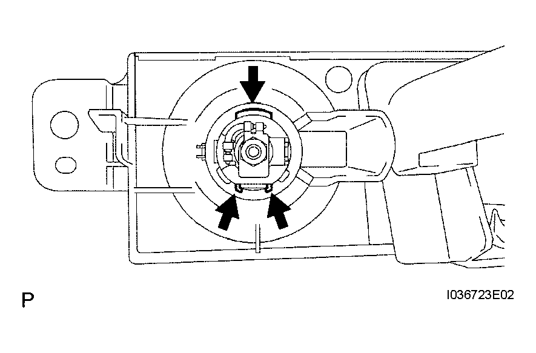
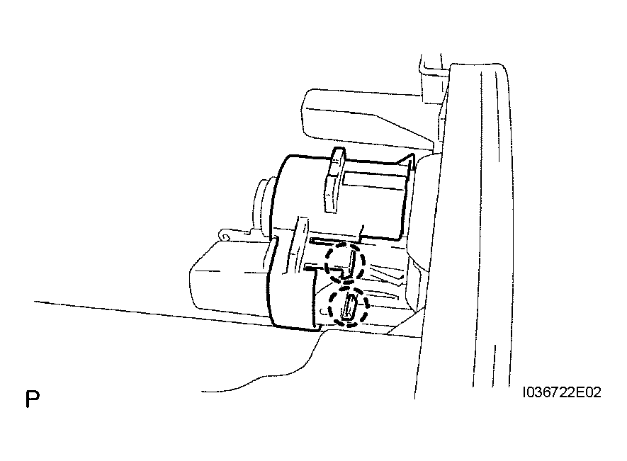

Cigarette Lighter Assembly: Installation
- Install cigarette lighter assembly.
- Align the socket with the notch on the cigarette lighter bezel stay and push the cigarette lighter in as hard as possible.
- Install the cigarette lighter knob and element.

Courtesy of © TOYOTA, LICENSE AGREEMENT TMS1002
- Attach the 2 claws to install the cigarette lighter cover.
- Install instrument cluster finish panel sub-assembly lower center. See INSTALLATION
.
- Install instrument cluster finish panel center. See INSTALLATION
.
- Install heater control knob. See INSTALLATION
.
- Connect cable to negative battery terminal.

Courtesy of © TOYOTA, LICENSE AGREEMENT TMS1002